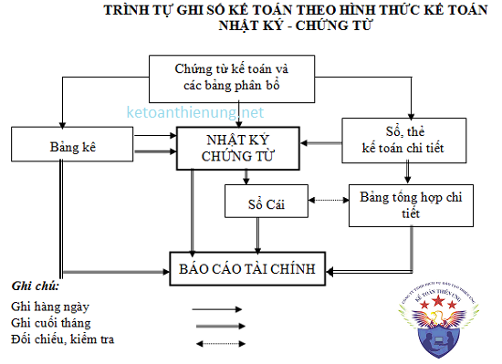
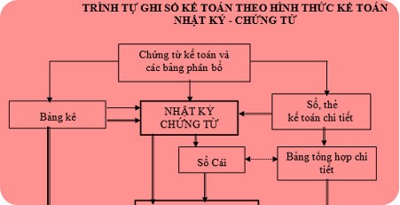

Hướng dẫn cách ghi sổ kế toán theo hình thức kế toán Nhật ký – Chứng từ theo Thông tư 200 mới nhất: Đặc trưng, trình tự ghi sổ, Nội dung, kết cấu và phương pháp ghi sổ theo hình thức Nhật ký - Chứng từ:
1) Đặc trưng cơ bản của hình thức kế toán Nhật ký - Chứng từ (NKCT)
- Tập hợp và hệ thống hoá các nghiệp vụ kinh tế phát sinh theo bên Có của các tài khoản kết hợp với việc phân tích các nghiệp vụ kinh tế đó theo các tài khoản đối ứng Nợ.
- Kết hợp chặt chẽ việc ghi chép các nghiệp vụ kinh tế phát sinh theo trình tự thời gian với việc hệ thống hoá các nghiệp vụ theo nội dung kinh tế (theo tài khoản).
- Kết hợp rộng rãi việc hạch toán tổng hợp với hạch toán chi tiết trên cùng một sổ kế toán và trong cùng một quá trình ghi chép.
- Sử dụng các mẫu sổ in sẵn các quan hệ đối ứng tài khoản, chỉ tiêu quản lý kinh tế, tài chính và lập báo cáo tài chính.
Hình thức kế toán Nhật ký – Chứng từ gồm có các loại sổ kế toán sau:
+ Nhật ký chứng từ;
+ Bảng kê;
+ Sổ Cái;
+ Sổ hoặc thẻ kế toán chi tiết.
2) Trình tự ghi sổ kế toán theo hình thức kế toán Nhật ký - Chứng từ
- Hàng ngày
- Căn cứ vào các chứng từ kế toán đã được kiểm tra lấy số liệu ghi trực tiếp vào các Nhật ký - Chứng từ hoặc Bảng kê, sổ chi tiết có liên quan. Đối với các loại chi phí sản xuất, kinh doanh phát sinh nhiều lần hoặc mang tính chất phân bổ, các chứng từ gốc trước hết được tập hợp và phân loại trong các bảng phân bổ, sau đó lấy số liệu kết quả của bảng phân bổ ghi vào các Bảng kê và Nhật ký - Chứng từ có liên quan. Đối với các Nhật ký - Chứng từ được ghi căn cứ vào các Bảng kê, sổ chi tiết thì căn cứ vào số liệu tổng cộng của bảng kê, sổ chi tiết, cuối tháng chuyển số liệu vào Nhật ký - Chứng từ.
- Cuối tháng khoá sổ, cộng số liệu trên các Nhật ký - Chứng từ, kiểm tra, đối chiếu số liệu trên các Nhật ký - Chứng từ với các sổ, thẻ kế toán chi tiết, bảng tổng hợp chi tiết có liên quan và lấy số liệu tổng cộng của các Nhật ký - Chứng từ ghi trực tiếp vào Sổ Cái. Đối với các chứng từ có liên quan đến các sổ, thẻ kế toán chi tiết thì được ghi trực tiếp vào các sổ, thẻ có liên quan. Cuối tháng, cộng các sổ hoặc thẻ kế toán chi tiết và căn cứ vào sổ hoặc thẻ kế toán chi tiết để lập các Bảng tổng hợp chi tiết theo từng tài khoản để đối chiếu với Sổ Cái. Số liệu tổng cộng ở Sổ Cái và một số chỉ tiêu chi tiết trong Nhật ký - Chứng từ, Bảng kê và các Bảng tổng hợp chi tiết được dùng để lập báo cáo tài chính.

3. Nội dung, kết cấu và phương pháp ghi sổ theo hình thức Nhật ký - Chứng từ
(1) Nhật ký chứng từ
- Trong hình thức Nhật ký - Chứng từ có 10 Nhật ký - Chứng từ, được đánh số từ Nhật ký - Chứng từ số 1 đến Nhật ký - Chứng từ số 10.
- Nhật ký chứng từ là sổ kế toán tổng hợp, dùng để phản ánh toàn bộ các nghiệp vụ kinh tế, tài chính phát sinh theo vế Có của các tài khoản. Một NKCT có thể mở cho một tài khoản hoặc có thể mở cho một số tài khoản có nội dung kinh tế giống nhau hoặc có quan hệ đối ứng mật thiết với nhau. Khi mở NKCT dùng chung cho nhiều tài khoản thì trên NKCT đó số phát sinh của mỗi tài khoản được phản ánh riêng biệt ở một số dòng hoặc một số cột dành cho mỗi tài khoản. Trong mọi trường hợp số phát sinh bên Có của mỗi tài khoản chỉ tập trung phản ánh trên một NKCT và từ NKCT này ghi vào Sổ Cái một lần vào cuối tháng. Số phát sinh Nợ của mỗi tài khoản được phản ánh trên các NKCT khác nhau, ghi Có các tài khoản có liên quan đối ứng Nợ với tài khoản này và cuối tháng được tập hợp vào Sổ Cái từ các NKCT đó.
- Để phục vụ nhu cầu phân tích và kiểm tra, ngoài phần chính dùng để phản ánh số phát sinh bên Có, một số NKCT có bố trí thêm các cột phản ánh số phát sinh Nợ, số dư đầu kỳ và số dư cuối kỳ của tài khoản. Số liệu của các cột phản ánh số phát sinh bên Nợ các tài khoản trong trường hợp này chỉ dùng cho mục đích kiểm tra, phân tích không dùng để ghi Sổ Cái.
Căn cứ để ghi chép các NKCT là chứng từ gốc, số liệu của sổ kế toán chi tiết, của bảng kê và bảng phân bổ.
= NKCT phải mở từng tháng một, hết mỗi tháng phải khoá sổ NKCT cũ và mở NKCT mới cho tháng sau. Mỗi lần khoá sổ cũ, mở sổ mới phải chuyển toàn bộ số dư cần thiết từ NKCT cũ sang NKCT mới tuỳ theo yêu cầu cụ thể của từng tài khoản.
Nội dung cơ bản và trình tự ghi chép các NKCT
(1.1) Nhật ký- Chứng từ số 1 (Mẫu số S04a1-DN)
- Dùng để phản ánh số phát sinh bên Có TK 111 “Tiền mặt" (phần chi) đối ứng Nợ với các tài khoản có liên quan.
- Kết cấu và phương pháp ghi sổ:
NKCT số 1 gồm có các cột số thứ tự, ngày của chứng từ ghi sổ các cột phản ánh số phát sinh bên Có của TK 111 "Tiền mặt" đối ứng Nợ với các tài khoản có liên quan và cột cộng Có TK 111. Cơ sở để ghi NKCT số 1 (ghi Có TK 111) là báo cáo quỹ kèm theo các chứng từ gốc (Phiếu chi, Hoá đơn...). Mỗi báo cáo quỹ được ghi một dòng trên NKCT số 1 theo thứ tự thời gian.
- Cuối tháng hoặc cuối quý, khoá sổ NKCT số 1, xác định tổng số phát sinh bên Có TK 111 đối ứng Nợ của các tài khoản liên quan và lấy số tổng cộng của NKCT số 1 để ghi Sổ Cái (Có TK 111, Nợ các tài khoản).
(1.2) Nhật ký - Chứng từ số 2 (Mẫu số S04a2-DN)
- Dùng để phản ánh số phát sinh bên Có TK 112 "Tiền gửi Ngân hàng" đối ứng Nợ với các tài khoản có liên quan. Kết cấu và phương pháp ghi sổ: NKCT số 2 gồm có các cột số thứ tự, số hiệu, ngày tháng của chứng từ ghi sổ, diễn giải nội dung nghiệp vụ ghi sổ, các cột phản ánh số phát sinh bên Có của TK 112 đối ứng Nợ với các tài khoản có liên quan và cột cộng Có TK 112. Cơ sở để ghi NKCT số 2 là các giấy báo Nợ của Ngân hàng kèm theo các chứng từ gốc có liên quan.
- Cuối tháng hoặc cuối quý, khoá sổ NKCT số 2, xác định tổng số phát sinh bên Có TK 112 đối ứng Nợ của các tài khoản liên quan, và lấy số tổng cộng của NKCT số 2 để ghi Sổ Cái (Có TK 112, Nợ các tài khoản).
(1.3) Nhật ký - Chứng từ số 3 (Mẫu số S04a3-DN)
- Dùng để phản ánh số phát sinh bên Có TK 113 “Tiền đang chuyển" đối ứng Nợ với các tài khoản có liên quan. Kết cấu và phương pháp ghi sổ: NKCT số 3 gồm có các cột số thứ tự, số hiệu, ngày tháng của Chứng từ ghi sổ, diễn giải nội dung nghiệp vụ ghi sổ, các cột phản ánh số phát sinh bên Có TK 113 đối ứng Nợ với các tài khoản có liên quan và cột cộng Có TK 113. Cơ sở để ghi vào NKCT số 3:
+ Đầu tháng khi mở NKCT số 3 phải căn cứ vào NKCT số 3 tháng trước để ghi vào dòng số dư đầu tháng TK 113.
+ Phần ghi Có TK 113, căn cứ vào giấy báo Có của Ngân hàng để ghi.
Cuối tháng hoặc cuối quý, khoá sổ NKCT số 3, xác định tổng số phát sinh Có của TK 113 đối ứng Nợ các tài khoản liên quan và lấy số tổng cộng của NKCT số 3 để ghi Sổ Cái (Có TK 113, Nợ các tài khoản).
(1.4) Nhật ký chứng từ số 4 (Mẫu số S04a4-DN)
- Dùng để phản ánh số phát sinh bên Có các TK 341 "Vay và nợ thuê tài chính", TK 343 “Trái phiếu phát hành” đối ứng Nợ của các tài khoản có liên quan.
- NKCT số 4 ngoài phần ghi Có TK 341, 343 đối ứng Nợ các tài khoản liên quan, còn có phần theo dõi thanh toán (ghi Nợ TK 341, 343, đối ứng Có các tài khoản liên quan). Kết cấu và phương pháp ghi sổ:
NKCT số 4 gồm có các cột số thứ tự, số hiệu, ngày tháng của Chứng từ ghi sổ, diễn giải nội dung nghiệp vụ ghi sổ, các cột phản ánh số phát sinh bên Có, bên Nợ của các tài khoản 341, 343 đối ứng Nợ và đối ứng Có các tài khoản liên quan.
- Khi mở NKCT số 4, số phát sinh của mỗi tài khoản tiền vay, nợ ngắn hạn và dài hạn được phản ánh riêng biệt ở một số trang dành cho mỗi tài khoản.
Cơ sở để ghi vào NKCT số 4 là khế ước vay, hợp đồng kinh tế (thuê mua TSCĐ, các khoản nợ dài hạn), giấy báo Nợ, báo Có của Ngân hàng và các chứng từ liên quan khác đến các khoản vay, nợ ngắn hạn và dài hạn.
- Cuối tháng hoặc cuối quý khoá sổ NKCT số 4, xác định tổng số phát sinh bên Có của từng TK 341, 343 đối ứng Nợ của các tài khoản liên quan.
Số liệu tổng cộng của NKCT số 4 được dùng để ghi Sổ Cái của các Tài khoản 341, 343 (Có TK 341, Nợ các tài khoản ; Có TK 343, Nợ các tài khoản).
(1.5) Nhật ký chứng từ số 5 (Mẫu số S04a5-DN)
- Dùng để tổng hợp tình hình thanh toán và công nợ với người cung cấp vật tư, hàng hoá, dịch vụ cho doanh nghiệp (Tài khoản 331 “Phải trả cho người bán").
- NKCT số 5 gồm có 2 phần: Phần phản ánh số phát sinh bên Có TK 331 đối ứng Nợ với các tài khoản có liên quan và phần theo dõi thanh toán (ghi Nợ TK 331 đối ứng Có với các tài khoản liên quan). Kết cấu và phương pháp ghi sổ:
- NKCT số 5 gồm có các cột số thứ tự, tên đơn vị (hoặc người bán), số dư đầu tháng, các cột phản ánh số phát sinh bên Có của TK 331 đối ứng Nợ với các tài khoản liên quan và các cột phản ánh số phát sinh bên Nợ của TK 331 đối ứng Có với các tài khoản liên quan.
- Cơ sở để ghi vào NKCT số 5 là sổ theo dõi thanh toán (TK 331 “Phải trả cho người bán"). Cuối mỗi tháng sau khi đã hoàn thành việc ghi sổ chi tiết TK 331, kế toán lấy số liệu cộng cuối tháng của từng sổ chi tiết được mở cho từng đối tượng để ghi vào NKCT số 5 (Số liệu tổng cộng của mỗi sổ chi tiết được ghi vào NKCT số 5 một dòng).
- Cuối tháng khoá sổ NKCT số 5, xác định tổng số phát sinh bên Có TK 331 đối ứng Nợ các tài khoản liên quan, và lấy số liệu tổng cộng của NKCT số 5 để ghi Sổ Cái (Có TK 331, Nợ các tài khoản).
(1.6) Nhật ký chứng từ số 6 (Mẫu số S04a6 -DN)
- Dùng để phản ánh số phát sinh bên Có TK 151 "Hàng mua đang đi đường” nhằm theo dõi tình hình mua vật tư, dụng cụ, hàng hoá còn đang đi đường. Kết cấu và phương pháp ghi sổ:
- NKCT số 6 gồm có các cột số thứ tự, diễn giải nội dung nghiệp vụ ghi sổ, số hiệu ngày tháng của chứng từ dùng để ghi sổ, các cột phản ánh số phát sinh bên Có của TK 151 đối ứng Nợ với các tài khoản liên quan, các cột số dư đầu tháng và cuối tháng.
- Cơ sở để ghi NKCT số 6 là hoá đơn của người bán, phiếu nhập kho. Nguyên tắc ghi NKCT này là ghi theo từng hoá đơn, phiếu nhập kho vật tư, hàng hoá.
- Toàn bộ hoá đơn mua vật tư, hàng hóa đã mua, đã thanh toán tiền hoặc đã chấp nhận thanh toán, nhưng đến cuối tháng hàng vẫn chưa về thì căn cứ vào các hoá đơn này ghi cột "Số dư đầu tháng" của NKCT số 6 tháng sau (mỗi hoá đơn ghi một dòng), sang tháng, khi hàng về căn cứ vào phiếu nhập kho ghi số hàng đã nhập vào các cột phù hợp phần "ghi Có TK 151, Nợ các tài khoản".
- Cuối tháng hoặc cuối quý khoá sổ NKCT số 6, xác định tổng số phát sinh Có TK 151 đối ứng Nợ của các tài khoản liên quan, và lấy số tổng cộng của NKCT số 6 để ghi Sổ Cái (Có TK 151, Nợ các tài khoản).
(1.7) Nhật ký chứng từ số 7(Mẫu số S04a7-DN)
- Dùng để tổng hợp toàn bộ chi phí sản xuất, kinh doanh của doanh nghiệp và dùng để phản ánh số phát sinh bên Có các tài khoản liên quan đến chi phí sản xuất, kinh doanh bao gồm , TK 152, TK 153, TK 154, TK 214, TK 241, TK 242, TK 334, TK 335, TK 338, TK 352, TK 356, TK 611, TK 621, TK 622, TK 623, TK 627, TK 631 và một số tài khoản đã phản ánh ở các Nhật ký - Chứng từ khác, nhưng có liên quan đến chi phí sản xuất, kinh doanh phát sinh trong kỳ, và dùng để ghi Nợ các tài khoản 154, 621, 622, 623, 627, 631, 242, 2413, 335, 641, 642…
NKCT số 7 gồm có 3 phần:
- Phần I: Tập hợp chi phí SXKD toàn doanh nghiệp, phản ánh toàn bộ số phát sinh bên Có của các tài khoản liên quan đến chi phí sản xuất, kinh doanh.
- Phần II: Chi phí sản xuất theo yếu tố.
- Phần III: Luân chuyển nội bộ không tính vào chi phí sản xuất, kinh doanh.
Phương pháp ghi chép Nhật ký - Chứng từ số 7:
Phần I. Tập hợp chi phí SXKD toàn doanh nghiệp, phản ánh toàn bộ số phát sinh bên Có của các tài khoản liên quan đến chi phí sản xuất, kinh doanh. Cơ sở để ghi phần này là:- Căn cứ vào dòng cộng Nợ của các Tài khoản 154, 631, 621, 622, 623, 627 trên các Bảng kê số 4 để xác định số tổng cộng Nợ của từng TK 154, 631, 621, 622, 623, 627 ghi vào các cột và dòng phù hợp của phần này.
- Lấy số liệu từ Bảng kê số 5 phần ghi bên Nợ của các TK 2413, 641, 642 để ghi vào các dòng liên quan.
- Lấy số liệu từ Bảng kê số 6, phần ghi bên Nợ của các TK 242 và của TK 335, TK 352, TK 356 để ghi vào các dòng Nợ TK 242 và Nợ TK 335, Nợ TK 352, Nợ TK 356 của phần này.
- Căn cứ vào các Bảng phân bổ, các Nhật ký - Chứng từ và các chứng từ có liên quan để ghi vào các dòng phù hợp trên mục B Phần I của Nhật ký - Chứng từ số 7.
- Số liệu tổng cộng của Phần I được sử dụng để ghi vào Sổ Cái.
Phần II . Chi phí sản xuất, theo yếu tố: Theo quy định hiện hành, chi phí sản xuất, kinh doanh của doanh nghiệp gồm 5 yếu tố chi phí:
- Chi phí nguyên liệu, vật liệu;
- Chi phí nhân công;
- Chi phí khấu hao TSCĐ;
- Chi phí dịch vụ mua ngoài;
- Chi phí khác bằng tiền.
Cách lập Phần II NKCT số 7
1. Yếu tố nguyên liệu, vật liệu:
- Căn cứ vào số phát sinh bên Có của các TK l52, 153, đối ứng với Nợ các tài khoản ghi ở Mục A Phần I trên Nhật ký - Chứng từ số 7 để ghi vào các dòng phù hợp của phần này.
- Căn cứ vào chứng từ và các sổ kế toán có liên quan để xác định phần nguyên liệu mua ngoài không qua nhập kho đưa ngay sử dụng để ghi vào yếu tố nguyên liệu, vật liệu ở các dòng phù hợp của Phần II Nhật ký - Chứng từ số 7.
- Yếu tố chi phí nguyên liệu, vật liệu khi tính phải loại trừ nguyên liệu, vật liệu, nhiên liệu dùng không hết nhập lại kho và phế liệu thu hồi.
2. Yếu tố chi phí nhân công:
- Căn cứ vào số phát sinh bên Có TK 334 và số phát sinh bên Có TK 338 (3382, 3383, 3384) đối ứng Nợ các tài khoản ghi ở Mục A Phần I trên Nhật ký - Chứng từ số 7 để ghi vào yếu tố chi phí nhân công ở các dòng phù hợp của Phần II Nhật ký - Chứng từ số 7.
3. Yếu tố khấu hao TSCĐ:
- Căn cứ vào số phát sinh bên Có TK 214 đối ứng Nợ các tài khoản ghi ở Mục A Phần I trên Nhật ký - Chứng từ số 7 để ghi vào yếu tố khấu hao TSCĐ ở các dòng phù hợp của Phần II NKCT số 7.
4. Yếu tố chi phí dịch vụ mua ngoài:
Căn cứ vào các Bảng kê, Sổ chi tiết, Nhật ký - Chứng từ số 1, 2, 5,... liên quan, xác định phần chi phí dịch vụ mua ngoài để ghi vào cột 4 (các dòng phù hợp) trên Phần II của Nhật ký - Chứng từ số 7.
5. Yếu tố chi phí khác bằng tiền:
Căn cứ vào các Bảng kê, Sổ chi tiết, Nhật ký - Chứng từ số 1, 2, 5,... liên quan, xác định phần chi phí khác bằng tiền để ghi vào cột 5 (các dòng phù hợp) trên Phần II của Nhật ký - Chứng từ số 7.
Phần III. Luân chuyển nội bộ không tính vào chi phí sản xuất, kinh doanh:
Cách lập Phần III NKCT số 7:
- Căn cứ vào số phát sinh bên Có TK 154 hoặc TK 631 đối ứng Nợ các TK có liên quan (154, 631, 242, 2413, 335, 621, 627, 641, 642,…) ở Mục A Phần I trên Nhật ký - Chứng từ số 7 để ghi vào cột 1 ở các dòng TK 154, 631, 242, 2413, 335, 621, 623, 627, 641, 642, 632 cho phù hợp của Phần III NKCT số 7.
- Căn cứ vào số phát sinh bên Có TK 621 đối ứng Nợ các tài khoản 154, 631 ở Mục A Phần I trên Nhật ký - Chứng từ số 7 để ghi vào cột 2 ở dòng TK 154 hoặc dòng TK 631 ở Phần III NKCT số 7.
- Căn cứ vào số phát sinh bên Có TK 622 đối ứng Nợ các TK 154, 631 ở Mục A Phần I trên Nhật ký - Chứng từ số 7 để ghi vào cột 3 ở dòng TK 154 hoặc dòng TK 631 ở Phần III NKCT số 7.
- Căn cứ vào số phát sinh bên Có TK 623 đối ứng Nợ các TK 154, 631 ở Mục A Phần I trên Nhật ký - Chứng từ số 7 để ghi vào cột 4 ở dòng TK 154 hoặc dòng TK 631 ở Phần III NKCT số 7.
- Căn cứ vào số phát sinh bên Có TK 627 đối ứng Nợ các TK 154, 631 ở Mục A Phần I trên Nhật ký - Chứng từ số 7 để ghi vào cột 5 ở dòng TK 154 hoặc dòng TK 631 ở Phần III NKCT số 7.
- Căn cứ vào số phát sinh bên Có các TK 242, 335, 2413, 352 đối ứng Nợ các TK 154, 631, 621, 623, 627, 641, 642 ở Mục A Phần I trên Nhật ký - Chứng từ số 7 để ghi vào cột 6, Cột 7, cột 8, cột 9 ở các dòng TK 154, 631, 621, 622, 623, 627, 641, 642 cho phù hợp ở Phần III NKCT số 7.
(1.8) Nhật ký - Chứng từ số 8 (Mẫu số S04a8-DN)
Dùng để phản ánh số phát sinh bên Có TK 155, 156, 157, 158, 131, 511, 515, 521, 632, 635, 641, 642, 711, 811, 821, 911. Kết cấu và phương pháp ghi sổ:
NKCT số 8 gồm có các cột số thứ tự, số hiệu tài khoản ghi Nợ và các cột phản ánh số phát sinh bên Có của các TK 155, 156, 157, 158, 131, 511, 515, 521, 632, 635, 641, 642, 711, 811, 821, 911, các dòng ngang phản ánh số phát sinh bên Nợ của các tài khoản liên quan với các tài khoản ghi Có ở các cột dọc. Cơ sở và phương pháp ghi NKCT số 8:
- Căn cứ vào Bảng kê số 8 và Bảng kê số 10 phần ghi Có để ghi vào các cột ghi Có TK 155, 156, 157, 158.
- Căn cứ vào Bảng kê số 11 phần ghi Có để ghi vào cột ghi Có TK 131.
- Căn cứ vào sổ chi tiết bán hàng dùng cho TK 511 phần ghi Có để ghi vào các cột ghi Có TK 511.
- Căn cứ vào sổ chi tiết dùng chung cho các tài khoản 515, 521, 632, 635, 641, 642, 711, 811, 821, 911 phần ghi Có để ghi vào các cột ghi Có TK 515, 521, 632, 635, 641, 642, 711, 811, 821, 911.
Cuối tháng hoặc cuối quý khoá sổ NKCT số 8 xác định tổng số phát sinh bên Có của các TK 155, 156, 157, 158, 131, 511, 515, 521, 632, 641, 642, 711, 811, 821, 911 đối ứng Nợ các tài khoản liên quan và lấy số tổng cộng của NKCT số 8 để ghi Sổ Cái.
(1.9) Nhật ký - Chứng từ số 9 (Mẫu số S04a9-DN)
Dùng để phản ánh số phát sinh bên Có TK 211 "TSCĐ hữu hình", TK 212 "TSCĐ thuê tài chính", TK 213 "TSCĐ vô hình", TK 217 “Bất động sản đầu tư”. Kết cấu và phương pháp ghi sổ:
NKCT số 9 gồm có các cột số thứ tự, số hiệu, ngày tháng của chứng từ dùng để ghi sổ, diễn giải nội dung nghiệp vụ ghi sổ, các cột phản ánh số phát sinh bên Có của TK 211, 212, 213, 217 đối ứng Nợ với các tài khoản có liên quan.
Cơ sở để ghi NKCT số 9 là các Biên bản bàn giao, nhượng bán, thanh lý TSCĐ và các chứng từ có liên quan đến giảm TSCĐ của doanh nghiệp.
Cuối tháng hoặc cuối quý khoá sổ NKCT số 9, xác định số phát sinh bên Có TK 211, 212, 213, 217 đối ứng Nợ của các tài khoản liên quan và lấy số tổng cộng của NKCT số 9 để ghi Sổ Cái.
(1.10) Nhật ký - Chứng từ số 10 (Mẫu số S04a10-DN)
Dùng để phản ánh số phát sinh bên Có của các TK 121, 128, 136, 138, 141, 161, 171, 221, 222, 228, 229, 243, 244, 333, 336, 338, 344, 347, 353, 411, 412, 413, 414, 418, 419, 421, 441, 461, 466, mỗi tài khoản được ghi trên một tờ Nhật ký- Chứng từ.
- Kết cấu và phương pháp ghi sổ: NKCT số 10 gồm có các cột số thứ tự, diễn giải nội dung nghiệp vụ ghi sổ, các cột phản ánh số phát sinh bên Có và bên Nợ của các TK 121, 128, 136, 138, 141, 161, 171, 221, 222, 228, 229, 243, 244, 333, 336, 338, 344, 347, 353, 411, 412, 413, 414, 418, 419, 421, 441, 461, 466, đối ứng Nợ và Có với các tài khoản liên quan, các cột số dư đầu tháng, số dư cuối tháng. Cơ sở để ghi NKCT số 10:
Căn cứ vào sổ chi tiết đầu tư chứng khoán dùng cho TK 121, 221 phần ghi Có để ghi vào các cột ghi Có TK 121, 221, Nợ các tài khoản liên quan ở các cột phù hợp.
- Căn cứ vào sổ theo dõi thanh toán dùng cho các TK 136, 138, 141, 222, 244, 333, 336, 344 phần ghi Có để ghi vào các cột ghi Có TK 136, 138, 141, 222, 244, 333, 336, 344, Nợ các tài khoản liên quan ở các cột phù hợp.
- Căn cứ vào sổ chi tiết dùng chung cho các Tài khoản 128, 228, 229, 161, 171, 353, 411, 412, 413, 414, 418, 421, 441, 461, 466, phần ghi Có để ghi vào các cột ghi Có TK 128, 228, 229, 161, 171, 353, 411, 412, 413, 414, 418, 421, 441, 461, 466.
Cuối tháng hoặc cuối quý khoá sổ NKCT số 10, xác định số phát sinh bên Có TK 121, 128, 136, 138, 141, 161, 171, 221, 222, 228, 229, 243, 244, 333, 336, 338, 344, 347, 353, 411, 412, 413, 414, 418, 419, 421, 441, 461, 466 và lấy số tổng cộng của NKCT số 10 để ghi Sổ Cái.
(2) Bảng kê
Trong hình thức NKCT có 10 bảng kê được đánh số thứ tự từ Bảng kê số 1 đến Bảng kê số 11 (Không có bảng kê số 7). Bảng kê được sử dụng trong những trường hợp khi các chỉ tiêu hạch toán chi tiết của một số tài khoản không thể kết hợp phản ánh trực tiếp trên NKCT được. Khi sử dụng bảng kê thì số liệu của chứng từ gốc trước hết được ghi vào bảng kê. Cuối tháng số liệu tổng cộng của các bảng kê được chuyển vào các NKCT có liên quan.
- Bảng kê có thể mở theo vế Có hoặc vế Nợ của các tài khoản, có thể kết hợp phản ánh cả số dư đầu tháng, số phát sinh Nợ, số phát sinh Có trong tháng và số dư cuối tháng... phục vụ cho việc kiểm tra, đối chiếu số liệu và chuyển sổ cuối tháng. Số liệu của bảng kê không sử dụng để ghi Sổ Cái.
Kết cấu và phương pháp ghi chép của các bảng kê:
(2.1) Bảng kê số 1 (Mẫu số S04b1-DN):
- Dùng để phản ánh số phát sinh bên Nợ TK 111 “Tiền mặt" (Phần thu) đối ứng Có với các tài khoản có liên quan. Kết cấu và phương pháp ghi sổ:
Bảng kê số 1 gồm có các cột số thứ tự, số hiệu, ngày, tháng của Chứng từ ghi sổ, diễn giải nội dung nghiệp vụ ghi sổ, các cột phản ánh số phát sinh bên Nợ của TK 111 đối ứng Có với các tài khoản liên quan và cột số dư cuối ngày.
- Cơ sở để ghi Bảng kê số 1 là các Phiếu thu kèm theo các chứng từ gốc có liên quan.
- Đầu tháng khi mở Bảng kê số 1 căn cứ vào số dư cuối tháng trước của TK 111 để ghi vào số dư đầu tháng này. Số dư cuối ngày được tính bằng số dư cuối ngày hôm trước cộng (+) số phát sinh Nợ trong ngày trên Bảng kê số 1 và trừ (-) Số phát sinh Có trong ngày trên NKCT số 1. Số dư này phải khớp với số dư tiền mặt hiện có tại quỹ cuối ngày.
- Cuối tháng hoặc cuối quý khoá sổ Bảng kê số 1, xác định tổng số phát sinh bên Nợ TK 111 đối ứng Có của các tài khoản liên quan.
(2.2) Bảng kê số 2 (Mẫu số S04b2-DN):
- Dùng để phản ánh số phát sinh bên Nợ TK 112 "Tiền gửi ngân hàng" đối ứng Có với tài khoản liên quan. Kết cấu và phương pháp ghi sổ:
Bảng kê số 2 gồm có các cột số thứ tự, số hiệu, ngày tháng của Chứng từ ghi sổ, diễn giải nội dung nghiệp vụ ghi sổ, các cột phản ánh số phát sinh bên Nợ của TK 112 đối ứng Có với các tài khoản liên quan và cột số dư cuối ngày.
Cơ sở để ghi Bảng kê số 2 là các giấy báo Có của Ngân hàng kèm theo các chứng từ gốc có liên quan. Cách tính số dư đầu tháng, cuối tháng, cuối ngày của TK 112 trên Bảng kê số 2 tương tự như cách tính số dư TK 111 trên Bảng kê số 1.
Cuối tháng hoặc cuối quý khoá sổ Bảng kê số 2, xác định tổng số phát sinh bên Nợ TK 112 đối ứng Có các tài khoản liên quan.
(2.3) Bảng kê số 3 (Mẫu số S04b3-DN):
- Dùng để tính giá thành thực tế nguyên liệu, vật liệu và công cụ, dụng cụ. Bảng kê số 3 chỉ sử dụng ở doanh nghiệp có sử dụng giá hạch toán trong hạch toán chi tiết vật liệu. Phương pháp lập Bảng kê số 3 phải căn cứ vào:
+ NKCT số 5 phần ghi Có TK 331, Nợ các TK 152, 153.
+ NKCT số 6 phần ghi Có TK 151, Nợ các TK 152, 153.
+ NKCT số 2 phần ghi Có TK 112, Nợ các TK 152, 153.
+ NKCT số 1 phần ghi Có TK 111, Nợ các TK 152, 153.
+ NKCT số 7 ...
Bảng kê số 3 gồm phần tổng hợp giá trị nguyên liệu, vật liệu nhập kho và phần chênh lệch giữa giá thực tế và giá hạch toán.
Hệ số chênh lệch giá nguyên liệu, vật liệu được xác định bằng công thức:
|
Hệ số chênh lệch giá |
Giá thực tế vật liệu tồn kho đầu kỳ |
+ |
Giá thực tế vật liệu nhập kho trong kỳ |
|
| = | ||||
| Giá hạch toán vật liệu tồn kho đầu kỳ | + |
Giá hạch toán vật liệu nhập kho trong kỳ |
Giá trị nguyên liệu, vật liệu xuất dùng trong tháng sẽ được xác định bằng (=) giá trị nguyên liệu, vật liệu xuất kho theo giá hạch toán (ở Bảng phân bổ số 2 - Bảng phân bổ nguyên liệu, vật liệu và công cụ, dụng cụ) nhân (x) với hệ số chênh lệch trên Bảng kê số 3.
(2.4) Bảng kê số 4 (Mẫu số S04b4-DN):
- Dùng để tổng hợp số phát sinh Có của các TK 152, 153, 154, 214, 241, 242, 334, 335, 338, 352, 611, 621, 622, 623, 627, 631 đối ứng Nợ với các Tài khoản 154, 631, 621, 622, 623, 627 và được tập hợp theo từng phân xưởng, bộ phận sản xuất và chi tiết cho từng sản phẩm, dịch vụ. Kết cấu và phương pháp ghi sổ:
- Bảng kê số 4 gồm có các cột số thứ tự, các cột phản ánh số phát sinh bên Có của các TK152, 153, 154, 214, 241, 242, 334, 335, 338, 352, 611, 621, 622, 623, 627, 631, các dòng ngang phản ánh chi phí trực tiếp sản xuất (ghi Nợ các TK 154, 631, 621, 622, 623, 627) đối ứng Có với các tài khoản liên quan phản ánh ở các cột dọc.
- Cơ sở để ghi vào Bảng kê số 4 là căn cứ vào Bảng phân bổ số 1, số 2, số 3, các bảng kê và các NKCT liên quan để ghi vào các cột và các dòng phù hợp của Bảng kê số 4. Số liệu tổng hợp của Bảng kê số 4 sau khi khoá sổ vào cuối tháng hoặc cuối quý được dùng để ghi vào NKCT số 7.
(2.5) Bảng kê số 5 (Mẫu số S04b5-DN):
- Dùng để tổng hợp số phát sinh Có của các Tài khoản 152, 153, 154, 214, 241, 242, 334, 335, 338, 352, 356, 611, 621, 622, 623, 627, 631 đối ứng Nợ với các Tài khoản 641, 642, 241. Trong từng tài khoản chi tiết theo yếu tố và nội dung chi phí: Chi phí nhân viên, chi phí vật liệu, chi phí dụng cụ, đồ dùng ... Kết cấu và phương pháp ghi sổ:
- Bảng kê số 5 gồm có các cột số thứ tự, các cột dọc phản ánh số phát sinh bên Có của các Tài khoản 152, 153, 154, 214, 241, 334, 335, 338, 61l, 621, 622, 627, 631... Các dòng ngang phản ánh chi phí bán hàng, chi phí quản lý doanh nghiệp hoặc chi phí đầu tư XDCB (ghi Nợ TK 641, 642, 241 đối ứng Có với các tài khoản liên quan phản ánh ở các cột dọc).
- Cơ sở để ghi vào Bảng kê số 5 là các Bảng phân bổ số 1, số 2, số 3, các bảng kê và NKCT có liên quan để ghi vào các cột và các dòng phù hợp với Bảng kê số 5. Số liệu tổng hợp của Bảng kê số 5 sau khi khoá sổ cuối tháng hoặc cuối quý được dùng để ghi vào NKCT số 7.
(2.6) Bảng kê số 6 (Mẫu số S04b6-DN):
- Dùng để phản ánh chi phí phải trả và chi phí trả trước (TK 242 “Chi phí trả trước ”, TK 335 “Chi phí phải trả”, TK 352 “Dự phòng phải trả”, TK 356 “Quỹ phát triển khoa học và công nghệ”). Kết cấu và phương pháp ghi sổ:
- Bảng kê số 6 gồm có các cột số thứ tự, diễn giải nội dung chứng từ dùng để ghi sổ, số dư đầu kỳ, số dư cuối kỳ, số phát sinh Nợ và phát sinh Có đối ứng với các tài khoản liên quan. Cơ sở để ghi vào Bảng kê số 6:
- Căn cứ vào các bảng phân bổ tiền lương, nguyên vật liệu, khấu hao TSCĐ và các chứng từ liên quan để ghi vào phần số phát sinh Nợ của TK 242, TK 335, TK 352, TK 356 đối ứng Có các tài khoản liên quan.
- Căn cứ vào kế hoạch phân bổ chi phí để ghi vào bên Có TK 242, căn cứ vào kế hoạch chi phí phải trả để ghi vào bên Có TK 335, căn cứ vào các khoản dự phòng phải trả phải trích lập để ghi vào bên Có TK 352, căn cứ vào số quỹ phát triển khoa học và công nghệ phải trích lập để ghi vào bên Nợ các tài khoản liên quan.
- Cuối tháng hoặc cuối quý, khoá sổ Bảng kê số 6, xác định tổng số phát sinh bên Có TK 242, 335, 352, 356 đối ứng Nợ của các tài khoản liên quan và lấy số liệu tổng cộng của Bảng kê số 6 để ghi NKCT số 7 (Có TK 242 và Có TK 335, 352, 356 Nợ các tài khoản).
(2.7) Bảng kê số 8 (Mẫu số S04b8-DN):
- Dùng để tổng hợp tình hình nhập, xuất, tồn kho thành phẩm hoặc hàng hoá theo giá thực tế và giá hạch toán (TK 155 “Thành phẩm”, TK 156 “Hàng hoá”, TK 158 “Hàng hoá kho bảo thuế”). Kết cấu và phương pháp ghi sổ:
- Bảng kê số 8 gồm có các cột số thứ tự, số hiệu, ngày tháng của chứng từ dùng để ghi sổ, diễn giải nội dung chứng từ ghi sổ, các cột phản ánh số phát sinh bên Nợ và bên Có của tài khoản 155, 156, 158 đối ứng Có hoặc Nợ với các tài khoản liên quan. Cơ sở để lập Bảng kê số 8 là các chứng từ, hoá đơn nhập, xuất và các chứng từ khác có liên quan.
- Số dư đầu tháng phản ánh số tồn kho đầu tháng được lấy từ số dư đầu tháng của TK 155, TK 156 và TK 158 (Chi tiết theo từng loại hàng, nhóm hàng, chi tiết cho từng loại thành phẩm hoặc nhóm thành phẩm).
Số phát sinh Nợ TK 155, TK 156, TK 158 đối ứng Có với các tài khoản phản ánh số nhập trong tháng của hàng hoá, thành phẩm, số phát sinh Có đối ứng với các tài khoản ghi Nợ phản ánh số xuất trong tháng của hàng hoá, thành phẩm.
- Số dư cuối tháng phản ánh số tồn kho cuối tháng bằng (=) số dư đầu tháng (+) số phát sinh Nợ trong tháng trừ (-) số phát sinh Có trong tháng.
- Bảng kê số 8 được mở riêng cho từng tài khoản. Số lượng tờ trong bảng kê nhiều hay ít phụ thuộc vào việc theo dõi phân loại hàng hoá, thành phẩm của doanh nghiệp. Số liệu tổng hợp của Bảng kê số 8 sau khi khoá sổ cuối tháng hoặc cuối quý được dùng để ghi vào NKCT số 8 (ghi Có TK 155, 156, 158, Nợ các tài khoản).
(2.8) Bảng kê số 9 (Mẫu số S04b9-DN):
- Dùng để tính giá thực tế thành phẩm, hàng hoá, hàng hoá kho bảo thuế.
Phương pháp lập Bảng kê số 9 tương tự như phương pháp lập và tính giá thành thực tế của vật liệu quy định ở Bảng kê số 3.
| Giá thực tế của hàng hoá, thành phẩm xuất trong tháng | = | Giá hạch toán của hàng hoá, thành phẩm xuất trong tháng | x | Hệ số chênh lệch giá (trên Bảng kê số 9) |
Số liệu tổng cộng cuối tháng hoặc cuối quý của Bảng kê số 8 và số 9 dùng để ghi vào NKCT số 8.
(2.9) Bảng kê số 10 - Hàng gửi đi bán (Mẫu số S04b10-DN):
- Dùng để phản ánh các loại hàng hoá, thành phẩm gửi đại lý nhờ bán hộ, và gửi đi hoặc đã giao chuyển đến cho người mua, giá trị dịch vụ đã hoàn thành, bàn giao cho người đặt hàng nhưng chưa được chấp nhận thanh toán.
Nguyên tắc theo dõi hàng gửi đi bán trên Bảng kê số 10 là theo dõi từng hoá đơn bán hàng từ khi gửi hàng đi đến khi được coi là đã bán. Kết cấu và phương pháp ghi sổ:
- Bảng kê số 10 gồm có các cột số thứ tự, số hiệu, ngày tháng của chứng từ dùng để ghi sổ, các cột ghi Nợ và ghi Có TK 157, đối ứng Có hoặc Nợ với các tài khoản liên quan, cơ sở để ghi vào Bảng kê số 10 là căn cứ vào các hoá đơn và các chứng từ có liên quan.
- Số dư đầu tháng lấy từ số dư cuối tháng trước của TK 157.
- Số phát sinh Nợ và phát sinh Có căn cứ vào từng hoá đơn và chứng từ để ghi vào các cột có liên quan, mỗi hoá đơn, chứng từ ghi một dòng.
- Số dư cuối tháng bằng (=) Số dư đầu tháng cộng (+) Số phát sinh Nợ trừ (-) Số phát sinh Có.
Số liệu tổng cộng cuối tháng hoặc cuối quý của bảng kê này sau khi khoá sổ được ghi NKCT số 8 (ghi Có TK 157, Nợ các tài khoản liên quan).
(2.10) Bảng kê số 11(Mẫu số S04b11-DN):
- Dùng để phản ánh tình hình thanh toán tiền hàng với người mua và người đặt hàng (TK 131 “Phải thu của khách hàng”). Kết cấu và phương pháp ghi sổ:
- Bảng kê số 11 gồm có các cột số thứ tự, tên người mua, số dư, các cột phản ánh số phát sinh bên Nợ, bên Có của TK 131 đối ứng Có hoặc Nợ với các tài khoản liên quan.
- Cơ sở để ghi Bảng kê số 11 là căn cứ vào số liệu tổng cộng cuối tháng của sổ theo dõi thanh toán (TK 131 “Phải thu của khách hàng”) mở cho từng người mua, và ghi một lần vào một dòng của Bảng kê số 11. Cuối tháng hoặc cuối quý khoá sổ Bảng kê số 11, xác định số phát sinh bên Có TK 131 và lấy số tổng cộng của Bảng kê số 11 để ghi NKCT số 8 (ghi Có TK 131, Nợ các tài khoản liên quan).
(3) Sổ Cái (Mẫu số S05-DN):
- Sổ Cái là sổ kế toán tổng hợp mở cho cả năm, mỗi tờ sổ dùng cho một tài khoản trong đó phản ánh số phát sinh Nợ, số phát sinh Có và số dư cuối tháng hoặc cuối quý. Số phát sinh Có của mỗi tài khoản được phản ánh trên Sổ Cái theo tổng số lấy từ Nhật ký - Chứng từ ghi Có tài khoản đó, số phát sinh Nợ được phản ánh chi tiết theo từng tài khoản đối ứng Có lấy từ các Nhật ký - Chứng từ liên quan. Sổ Cái chỉ ghi một lần vào ngày cuối tháng hoặc cuối quý sau khi đã khoá sổ và kiểm tra, đối chiếu số liệu trên các Nhật ký - Chứng từ.
Trên đây là những quy định về cách ghi sổ kế toán theo hình thức Nhật ký – Chứng từ, ngoài ra các bạn có thể xem thêm: Cách làm sổ sách kế toán trên Excel
Chúc các bạn thành công.
__________________________________________________
